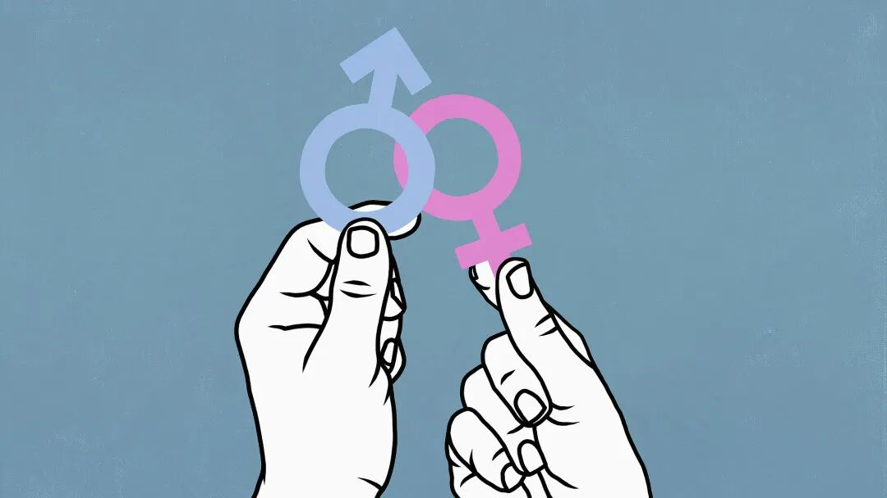
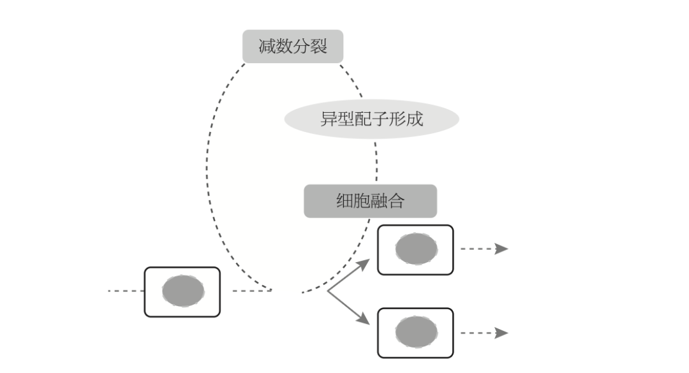
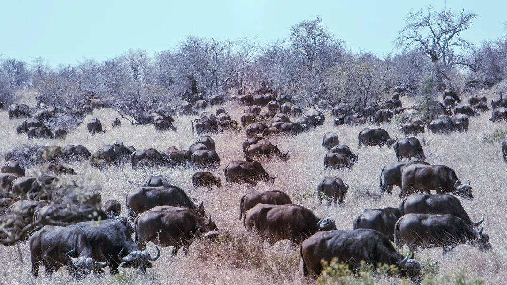
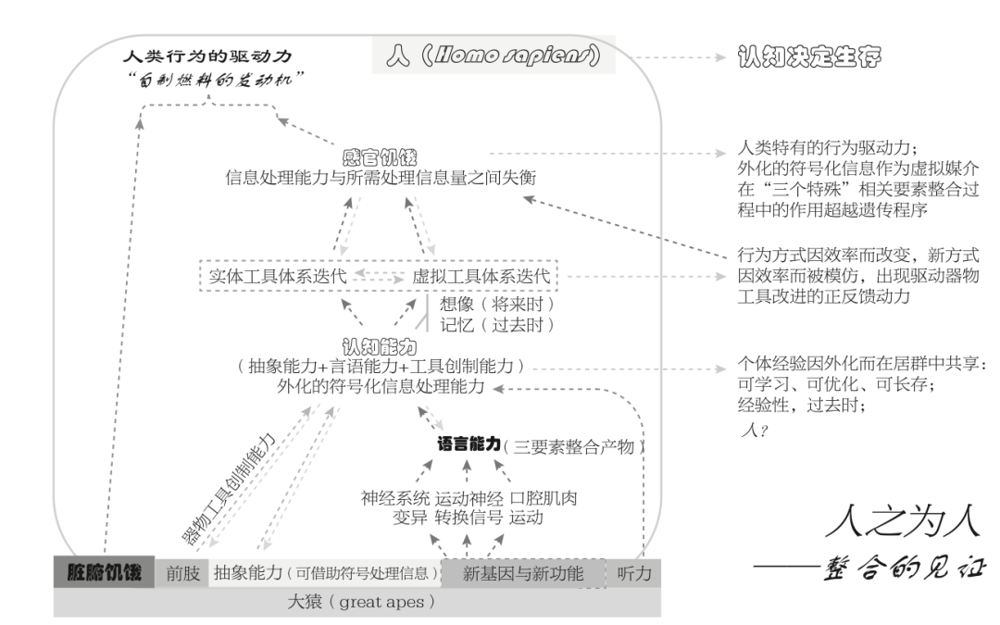
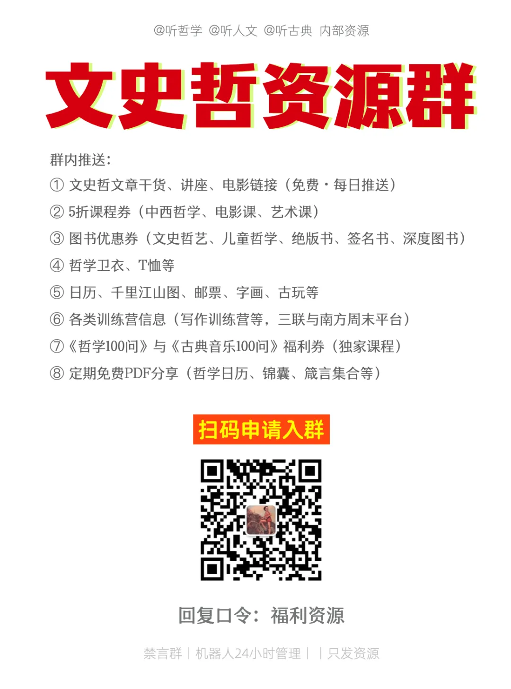

💡 北大性学课：人类为何非要赋予“性”以意义？
Why must humanity give sex meaning? A Peking University course on sexuality

当你听到“性”这个字，第一反应react[riækt] v. 反应,起作用；反对,反抗；起反作用,起不良反应是什么？
大多数bulk[bəlk] n. 体积，容量；大多数，大部分；大块人或许会想到：性别、两性、亲密关系，或者是人性、性命等。

我们习惯把“性”理解absorb[əbˈzɔrb] v. 吸收；吸引；承受；理解；使…全神贯注为一个高度人类化、社会化的概念，但是，“性”从来不只属于人类，它比人类古老得多，也广泛得多。
北大生命科学学院教授instruct[ˌɪnˈstrəkt] v. 指导；通知；命令；教授白书农在《万物有性？》中，做了一件事：他把“性”从人类的经验中剥离出来，重新放回到生命的vital[ˈvaɪtəl] adj. 生死攸关的,重大的；生命的,生机的演化过程之中。
当我们把“性”从人类视角移开，就会发现很多我们以为理所当然的东西disguise[dɪsˈgaɪz] n. 伪装；假装；用作伪装的东西，其实只是局部经验。
一、从生命科学角度angle[ˈæŋgəl] n. 角度，角，方面看，“性”到底是什么？
暂时放下固有认知，从生物学biology[baɪˈɑləʤi] n. 生物学来追问“性”是什么。
在白书农教授的界定中，“性”有非常明确的definite[ˈdɛfənət] adj. 明确的;一定的起点：“性”是随着真核生物出现才产生的，是由异型配子的差异所引出的“区分”。也就是namely[ˈneɪmli] adv. 即,也就是说，“性”的本质其实是差异的产生与组合。

有性生殖周期包含减数分裂、异型配子形成和细胞融合这3个事件，它加入了自主产生变异的variable[ˈvɛriəbəl] adj. 变量的；可变的；易变的，多变的；变异的，[生物] 畸变的功能。人类是真核细胞演化到很晚阶段才出现arise[əraɪz] v. 出现；上升；起立的生物类群。
我们熟悉的那些现象，性别分化、性行为、两性关系，其实都是后来的结构性安排，其核心功能只有一个：保障异形配子的形成与相遇，从而完成有性生殖周期，也就是说，“性”是一套保障生命系统运作的operational[ˌɑpərˈeɪʃənəl] adj. 操作的；运作的结构机制。
它既没有目的，也没有意志，更不是为了“快乐”或“繁衍”而存在contemporary[kənˈtɛmpərˌɛri] adj. 现代的,当代的；发生[存在]于同一时代的，它只是被演化“留下来”的一种方案。
二、既然如此，为什么生命还需要entail[ɛnˈteɪl] v. 使需要，必需；承担；遗传给；蕴含“性”？
如果“性”只是一个机制，那问题就来了：为什么演化会选择这样一套复杂的complicated[ˈkɑmpləˌkeɪtəd] adj. 难懂的，复杂的机制？
书中反复强调：有性生殖的根本功能，是保障生命系统的systematic[ˌsɪstəˈmætɪk] adj. (al)系统的,有组织的稳健性。“稳健性”可以理解为：既有真核细胞本来具有的集约、优化的优越性superiority[ˌsupɪriˈɔrɪti] n. 优越，优势；优越性，又能够响应周边相关要素变化。
在这个意义上，个体不再是目的intention[ˌɪnˈtɛnʧən] n. 意图；目的；意向；愈合，而是“DNA多样性的载体”。通过有性生殖，不同个体之间交换和重组基因，从而维持整个群体的适应adapt[əˈdæpt] v. 使适应；改编能力。
这带来一个非常反直觉的gut[gət] adj. 简单的；本质的，根本的；本能的，直觉的结论：动物的性行为，本质上是一种“利群行为”，而不是我们常说的“个体为了繁衍自身”。

动物性行为中的交配权争夺现象之所以被保留下来，是因为这种行为能强化有利于整合子连接效率和网络稳健性的基因在居群中的传播，其优越性在于“利群”而不在absence[ˈæbsəns] n. 缺席，不在；缺乏，不存在于“利己”。
在这里，白书农还特别批评了一种流行解释：“自私的selfish[ˈsɛlfɪʃ] adj. 自私的；利己主义的基因”观点认为，基因“为了复制自己”，劫持了个体作为工具。
然而，DNA并没有“意志”，它的变化本质上是随机的analogue[ˈænəˌlɔg] adj. 类似的；相似物的；模拟计算机的。它之所以复制clone[kloʊn] v. 无性繁殖，复制不是“想要复制”，它是生命大分子网络稳健性维持机制的一个环节。
DNA片段上碱基排列方式的形成是随机的，DNA片段所承载功能的实现accomplish[əˈkɑmplɪʃ] v. 完成；实现；达到也不是自主的。
因此不妨说：性，不是某种意志的结果haul[hɔl] n. 拖，拉；用力拖拉；努力得到的结果；捕获物；一网捕获的鱼量；拖运距离，而是整个系统运行的副产品。
三、打破breach[briʧ] v. 违反，破坏；打破常识：我们对“性”的理解是被建构的
当我们理解了“性”的生物breed[brid] n. [生物] 品种；种类，类型学基础之后，再来看人类社会中的“性”，就会发现一个巨大落差。
在人类世界中，“性”被赋予了大量意义：为了繁衍、为了爱情、为了快感……但这些解释大多来自一个共同来源：人类的认知cognition[kɒɡˈnɪʃn] n. 认知机制。
也就是说，我们把自己的经验，投射到了生命现象phenomenon[fəˈnɑməˌnɑn] n. 现象；奇迹；杰出的人才之上，再把这种投射，当作“自然”。在这个过程中，许多人用人类概念解释动物articulate[ɑrˈtɪkjəˌleɪt] n. 【动物学】有节体的动物行为，再用这些解释反过来证明人类自身。
最终产生generate[ˈʤɛnərˌeɪt] v. 产生,发生的，是一种“看似科学”的误读。比如我们常说：鹿长出大角，是为了争夺compete[kəmˈpiːt] v. 竞争；争夺，竞争交配权。但实际上：鹿并不是“为了”打赢竞争contend[kənˈtɛnd] v. 竞争；奋斗；斗争；争论才长出角，而是某种性状在竞争中偶然被保留下来。甚至，过大的鹿角反而会增加augment[ɔgˈmɛnt] v. 增加；增大生存负担。
人类习惯用“目的”解释结果consequence[ˈkɑnsəkwəns] n. 结果,后果,影响，但演化并不遵循这种逻辑。
四、另类解读：人类为何非要赋予endow[ɛnˈdaʊ] v. 赋予；捐赠；天生具有“性”以意义
既然“性”本身没有目的，为什么人类如此执着于glue[glu] v. 粘合；似胶般固着于为它赋予意义？书中的解释非常有启发性：这与人类的生存方式alike[əˈlaɪk] adv. 以同样的方式；类似于变化有关。
当人类从采集狩猎转向农耕agriculture[ˈægrɪˌkəlʧər] n. 农业；农耕；农业生产；农艺，农学畜牧之后，必须开始追溯事物的来源，以便控制和利用它们。
当古人类将大中型动物赶尽杀绝，就不得不转变为translate[trænzˈleɪt] v. 翻译；转化；解释；转变为；调动农耕畜牧。
与此同时，人类发展出：言语能力、抽象能力、工具创制能力，这些能力结合bind[baɪnd] v. 结合；装订；有约束力；过紧起来，形成了一种新的生存方式：认知决定生存。

人类认知能力capability[ˌkeɪpəˈbɪləti] n. 能力起源的一个假设。
在这个过程中，“性”不再只是一个生物现象，而成为一个被不断解释、建构、再生产的productive[pərˈdəktɪv] adj. 能产的,多产的；生产(性)的对象。于是accordingly[əˈkɔrdɪŋli] adv. 因此，于是；相应地；照著，我们看到：爱情，被理解为未来投射的共鸣；婚姻，成为社会协作的制度安排arrange[əreɪnʤ] vt. 整理， 排列， 布置 ；安排， 筹备；性快感，变成欲望appetite[ˈæpəˌtaɪt] n. 食欲，胃口；欲望机制与文化诱导的结果。
也就是说：性现象是先天的，但性观念conception[kənˈsɛpʃən] n. 概念， 观念；设想， 构想是后天形成的。而问题在于consist[kənˈsɪst] v. (in)在于；(of)由…组成,由…构成我们很容易：把制度当作自然；把偏见bias[baɪəs] n. 偏见；偏爱；斜纹；乖离率当作事实；把欲望当作自由liberty[ˈlɪbərˌti] n. 自由；许可；冒失。
最终，我们反而被自己构建的观念所束缚bound[baʊnd] v. 束缚；使跳跃。
五、重新理解comprehend[ˌkɑmpriˈhɛnd] v. 理解；包含；由…组成“性”，也重新理解我们自己
白书农教授在书的最后提醒我们：人类最大的障碍barrier[ˈbɛriər] n. 障碍；栅栏,障碍(物)之一，是把对现象的解释，当作现象本身。
而“性”，恰恰是最容易发生这种混淆confuse[kənfˈjuz] v. 使混乱,混淆的领域。人们因为对生命系统的性现象知之甚少而靠“脑补”演绎出的有关性现象的各种解释，在现在看来绝大部分都是无稽之谈fable[ˈfeɪbəl] n. 寓言；无稽之谈。
当我们理解comprehension[ˌkɑmpriˈhɛnʃən] n. 理解， 领悟“万物有性”，其实是在重新学习——如何不被自己的认知所误导。从认知决定生存的角度看，观念是人构建的，也应该由人去解构和重构。
生物creature[ˈkriʧər] n. 动物;生物学视角下的“性”学课
